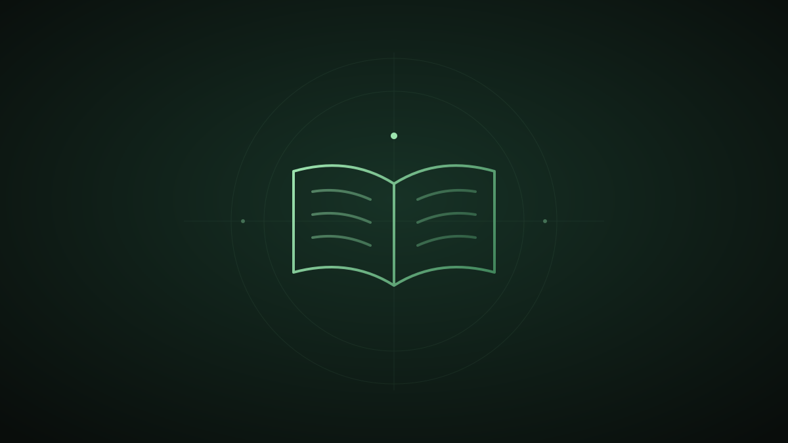

暂无内容
发现页首批用默认规则，后续批次按当前配置预加载筛选。
实时搜索 B站视频，从 Quanta 公开网页发现文章并提取可读取正文。跳过检测到的付费墙、登录墙、禁止抓取或正文不足的页面，不使用图文站点 API 或 RSS。页面结构变化可能导致来源暂不可用，阅读器保留原文链接。
允许地理和历史科普；筛除纯拼接合集、基础教育、大学数学、课程录播及考试内容。B站作者须认证且粉丝超过1万；无法核实则排除。另过滤政治、成人恶搞及明显伪科学宣传。规则可能漏判，粉丝及认证不代表内容真实。
收藏与足迹保存在当前浏览器。
播放器加载中；若无法播放，可查看原视频。

正文